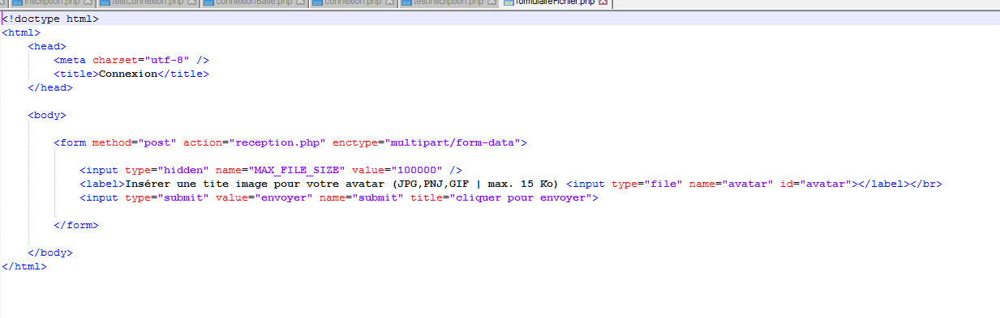

Stage première année
BTS SIO Option SLAM
Stage première Année
J’ai effectué mes stages durant ma formation de mon BTS SIO.
Mon stage de première année s'est déroulé au sein de l'entreprise Lenormand, à Montataire. Mon maitre de stage était aussi l’administrateur réseau de l'entreprise. Voici les différentes missions que j’ai pu réaliser au cours de ce stage:
- Assemblage et installation complète d'un poste
- Accès à un site depuis l'exterieur
- Partager un dossier de la machine virtuelle
- Developpement d'une fonctionnalitée connexion et inscription
- Developpement d'une fonctionnalitée d'ajout de photo dans un dossier
Assemblage et installation complète d'un poste
Installation physique:
Dans cette première mission j’ai dû assembler plusieurs postes, en assemblant tous les composants nécessaires. Voici une image présentant les différents composants assemblés :
- La carte mère est insérée puis visée en premier, c’est la carte qui assure la liaison de tous les composants et périphériques.
- Le processeur se fixe sur la carte mère, c’est le cerveau de l’ordinateur, c’est lui qui va faire tous les calculs, c’est un circuit électronique qui effectue les opérations arithmétiques et logiques.
- Les barrettes de RAM sont insérées sur la carte mère, c’est la mémoire informatique dans laquelle sont stockées les informations
- Sur la partie droite, le disque dur sera vissé afin d’être stable, car il est fragile et peut perdre des données. C’est la mémoire de l'ordinateur puisque son rôle est de stocker des données informatiques
- Le bloc en haut à gauche est l’alimentation de l’ordinateur, c’est ici que tout le courant va passer et sera distribué aux différents composants lorsque l’ordinateur sera alimenté.
- C’est l’endroit ou la carte graphique sera fixée. La carte graphique est un composant de l'unité centrale chargé de l'affichage sur l'écran
- Le lecteur sera fixé en haut à droite. C’est un lecteur de disque optique qui lit au moyen d'une diode laser les disques optiques appelés disques compacts.
Installation du système d’exploitation
Une fois l’ordinateur allumé et correctement assemblé, un système d’exploitation doit être installé. J’ai installé un système Windows 10 via WDS. Les Services de déploiement Windows ("Windows Deployment Services" ou WDS) sont une technologie de Microsoft permettant d'installer un système d'exploitation Windows via le réseau. Une fois l’ordinateur allumé, nous devons configurer le BIOS, afin de démarrer l’ordinateur sur la carte réseau. J’ai commencer par activer le démarrage à partir du LAN, le réseau local. Ensuite le CSM doit être désactivé pour faire toutes les manipulations manuellement. Le BIOS est donc configuré pour l’installation du système d’exploitation. Je peux donc accédé au menu qui permet de choisir sur quels composants nous souhaitons démarrer l’ordinateur. J’ai choisi donc le mode d’adressage IPV4 comme si dessous.
Je peux désormais installer Windows facilement et graphiquement.
Installation coté logique (software)
Ensuite, j’ai activé Windows grâce à MKSAuto. KMS, ou Key Management System, est un service permettant de répondre aux demandes d’activation des systèmes Windows Vista et Windows Server 2008 sans spécifier de clé au niveau des machines “clientes” ni avoir besoin de contacter les services d’activation de Microsoft sur Internet.
On remarque que Windows est maintenant activé :
Une fois tous les logiciels de base installés et le Windows activé, l’ordinateur est inséré au domaine, « Lenormant.intra ». Il suffit de se rendre dans le système est de cliquer ici :
Ensuite, j’ai coché « Domaine » et insérer le nom de domaine auquel vous voulez intégrer votre poste, ici ce sera "lmLenormant".
Accèder à un site depuis l'extérieur
Installation de Virtual Box
Tout d’abord Virtual box a été installé afin de travailler dessus et de pouvoir avoir accès à un site localisé sur la machine virtuel depuis l’ordinateur physique. Mise en place d'une machine virtuelle sous Windows 10 Ensuite un Windows est installé sur la machine virtuelle.
Installation de wamp sur la VM
Afin de pouvoir développer correctement sur la machine virtuelle j’ai installé Wamp. WAMP est l'acronyme de “Windows Apache MySQL, PHP5”. Il permet d'installer et de gérer Apache, PHP, MySQL, phpMyAdmin, Sqlitemanager et un gestionnaire de services. Wamp permet donc de faire tourner un serveur de développement pour des applications en PHP sur votre ordinateur. Cependant pour le bon fonctionnement de wamp, certains package C++ doivent être installé.
Paramétrer wamp pour l'accès depuis l'extérieur
Une fois wamp activé et opérationnel (icone vert), j’ai paramétré wamp pour l’accès au site depuis l’extérieur. (Dans le httpd.conf)

Création d'un Virtual host
J’ai créé une page HELLO WORLD afin de vérifier si nous accédons bien au site grâce à l’adresse IP :
A présent je veux accéder au site, non plus par l’adresse ip mais par un nom. J’ai crée un Virtual Host. Pour cela j’ai d’abord modifié le fichier hosts situé dans « SYSTEME32/drivers/etc/ »
Ensuite j’ai modifié le fichier de configuration d’apache httpd.conf situé sur C:\wamp\bin\apache\apache2.4.9\conf
Partage Windows
J’ai crée un partage Windows sur le dossier www localisé sur la machine virtuelle pour pouvoir y accéder lorsqu’on est connecté directement sur la machine physique. Tout d’abord j’ai fais un clique droit sur le dossier que je souhaitais partager puis « propriété ».
Ensuite dans « partage », j’ai cliqué sur « partage avancé » et j’ai coché « Partager ce dossier ».
Ensuite j’ai cliqué sur « partager », j’ai choisis « tout le monde » avec les droits « lecture/écriture »
Développement d’une fonctionnalité d’inscription et d’une fonctionnalité de connexion
Création d'une base de données
Tout d’abord, j’ai crée une base de données afin de rendre le site web dynamique. Tout d’abord il faut savoir que durant tout le mois de formation, j’ai travaillé sur ma base de données personnelle afin d’importer tout mes travaux par la suite dans la base de données de l’entreprise que nous verrons page 22
Création d'un formulaire d'inscription
Création d’un script de connexion a la base de données
Création d’un script qui contrôle les données saisies sur le formulaire d’inscription
Création du formulaire de connexion
Création du script qui contrôle les données saisies sur le formulaire de connexion
Développement d'une fonctionnalité d'ajout de photos dans un dossier
Création formulaire avec demande de fichier
Une nouvelle fonctionnalité doit être mise en place. Créer un formulaire de demande de fichier afin de l’enregistrer dans un dossier. Les fichiers seront les photos des magasins des différents sites.
Voici le script du formulaire:
Puis comment il sera affiché :
Script php qui réalise des contrôles sur le fichier (extension et taille)
J’ai ensuite fais des contrôles en php sur le fichier (la taille et l’extension) : Une fois le fichier contrôlé, le fichier est enregistré dans le dossier choisi, ici les photos de quelques magasins.
Importation d'un fichier Excel dans une base de données
Importation via ODBC
Nous allons importer un fichier excel dans une base de données via ODBC et PhpMyAdmin. ODBC (sigle de Open Database Connectivity) est un intergiciel qui permet à une application informatique, par un procédé unique, de manipuler plusieurs bases de données qui sont mises à disposition par des systèmes de gestion de bases de données (SGBD) ayant chacun un procédé propre. Nous allons tout d’abord télécharger keePass, l’entreprise a enregistrer tout ses utilisateurs et mot de passe grâce a ce logiciel, il y’a également les informations basique tel que le prénom ou encore le Nom. Une fois téléchargé, nous avons importer le fichier avec tout les utilisateurs de l’entreprise dans KeePass. Ensuite nous avons téléchargé ODBC :
Importation d'un fichier Sql via PhpMyAdmin

Tous mes travaux sont importés dans la base de données intra_groupe